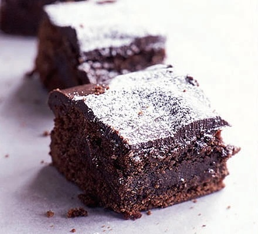

Easy Brownies Recipe

A Gooey delicious treat, these brownies are so easy to make.
Ingredients
- 375g good quality dark chocolate
- 375g butter, cut into pieces
- 500g caster sugar
- 6 medium eggs
- 225g plain flour
For the topping (optional)
- 140g good quality dark chocolate
- 50g butter, cut into pieces
- icing sugar for dusting
Steps
- Butter and line a 30cm x 21cm tin. Pre-heat the oven to 180C/160C fan/gas 4.
- Break up the chocolate with the butter and melt in the microwave, stirring halfway through.
- Beat the sugar and eggs in a bowl. Stir in the melted chocolate, add the flour and beat well. Pour into the tin and bake for 40-45 minutes, or until the top looks papery and feels slightly wobbly. Leave to cool in tin.
- If your're making the topping, break up the chocolate with the butter and melt in the microwave. Stir until smooth then spread over the cake. Dust with icing sugar and cut into squares